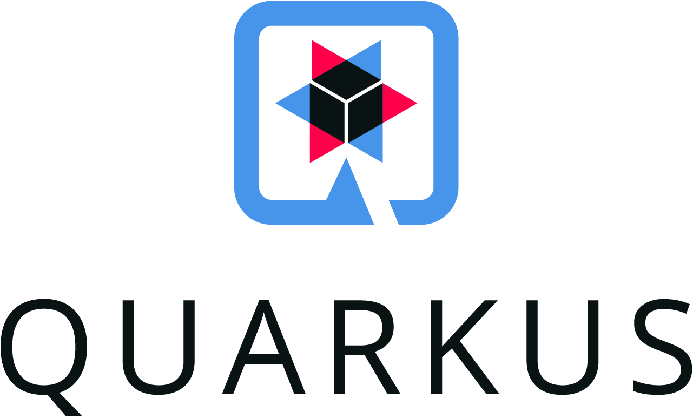
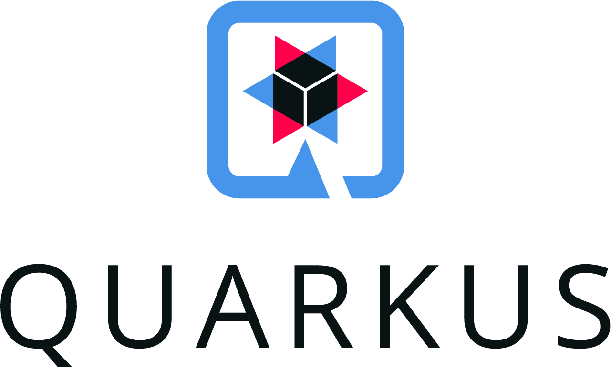
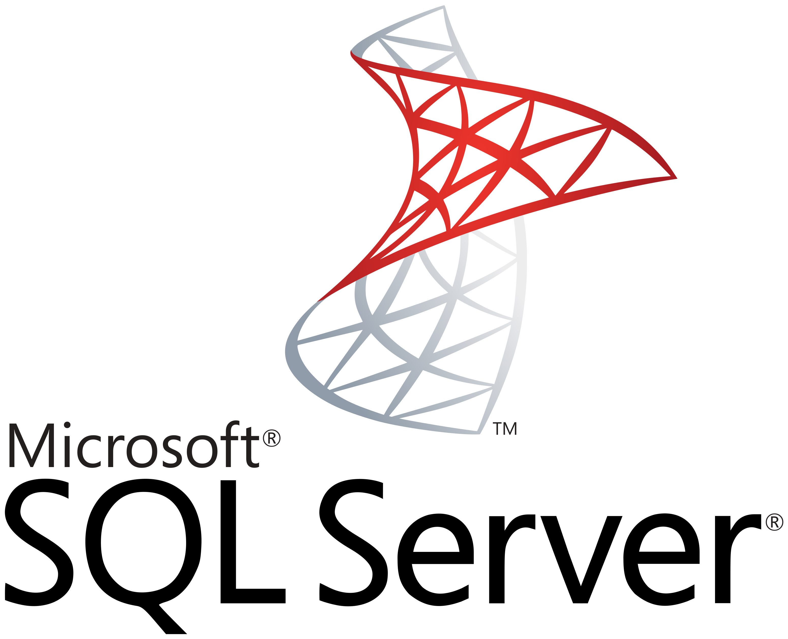
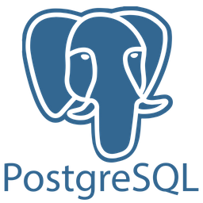
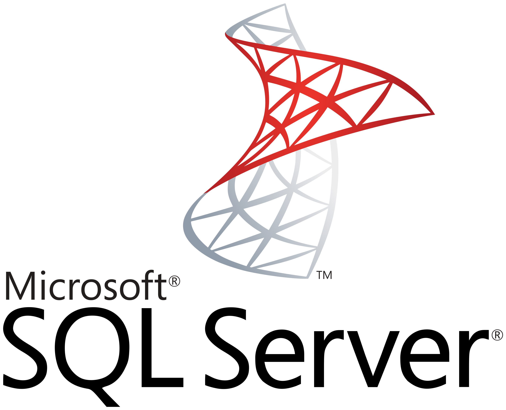
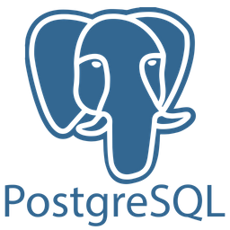
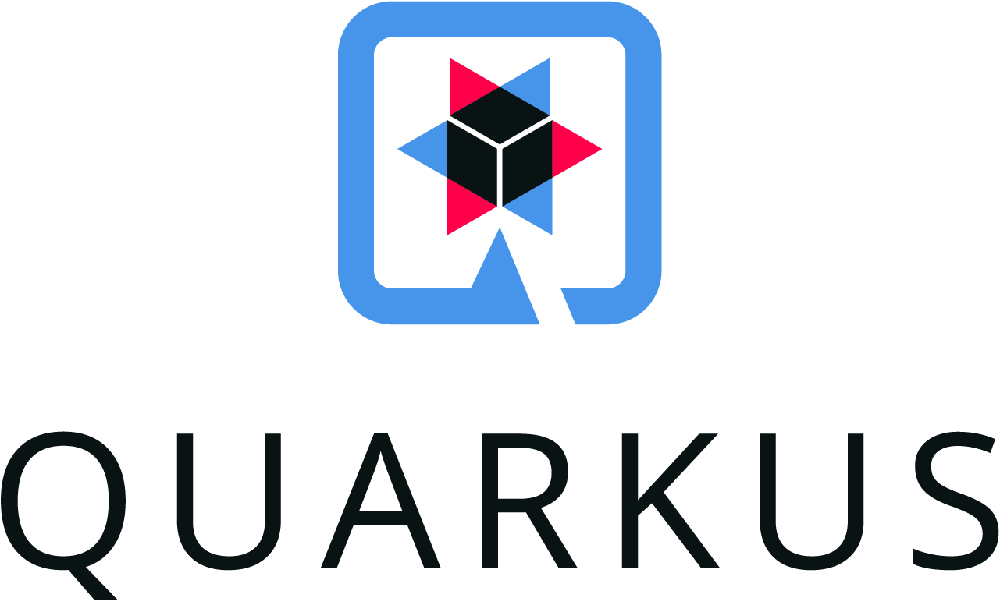
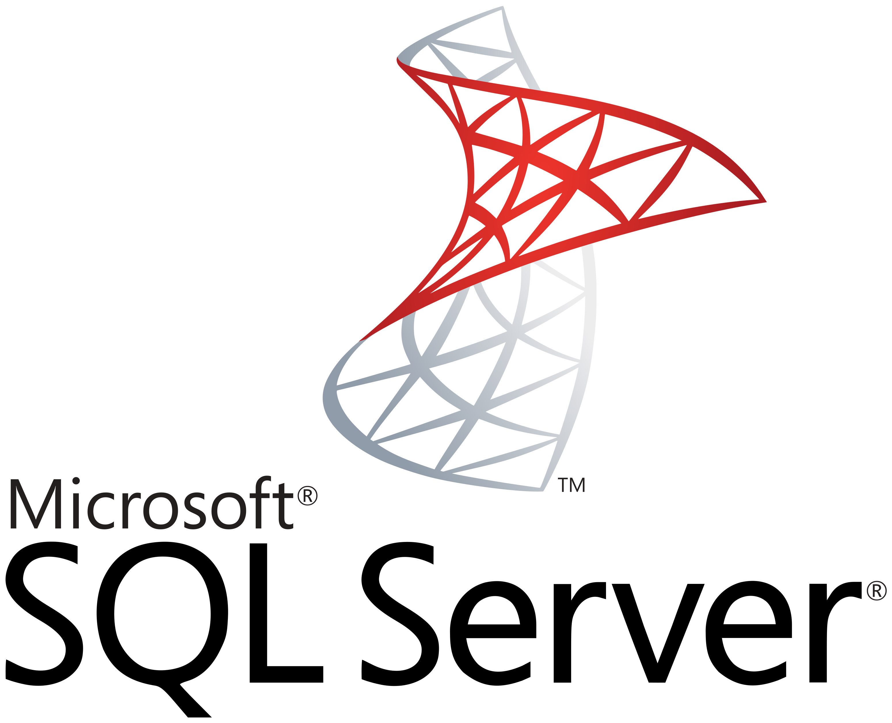
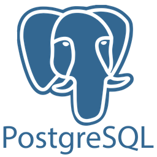

 





Sou um desenvolvedor apaixonado por tecnologia e sempre buscando novos desafios.
Clique aqui para saber mais sobre mim.
Clique aqui para saber mais sobre minha trajetória profissional.
Veja meus projetos no GitHub.


